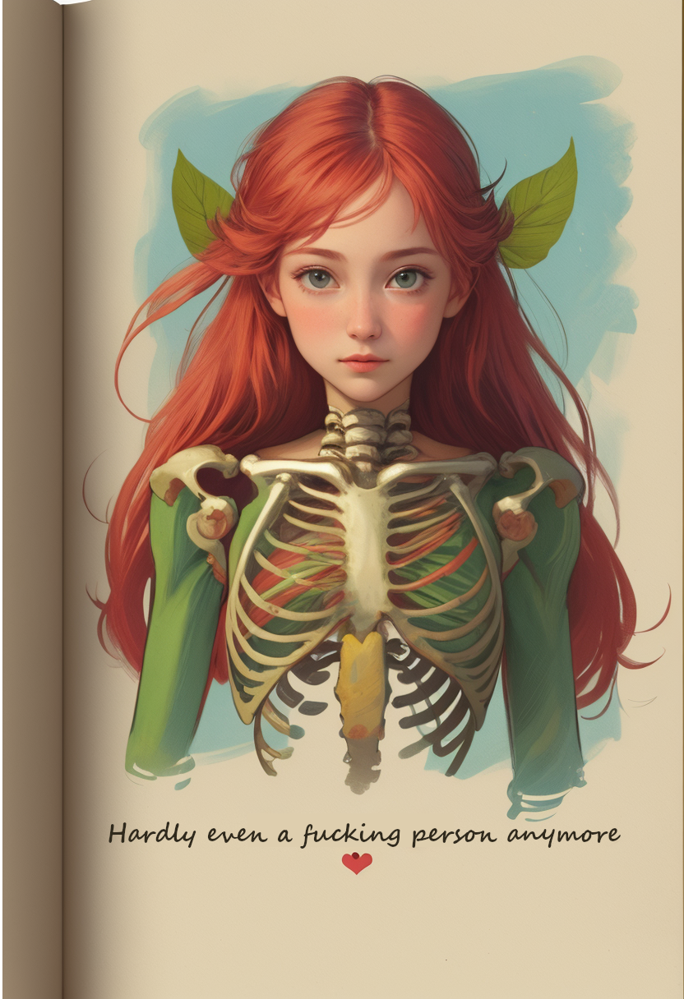

Except for this little stream of consciousness that's escaping on July 6, 2024, I'm having a really hard time doing things that are creative.
And I think my imagination is broken? I'm fairly sure it used to "work" as a kid - I spent most of 6th grade daydreaming about, planning upgrades for, and drawing pictures of my Eve Online spaceships. But somewhere along the way it kinda got lost. And now I am in the "dark" of aphant. Was I always this way?
Most of the time if I try to do... well most anything, there it's like suddenly there's an invisible block between me and that goal. Even if it's something easy and I'm already sitting at my computer, bam suddenly as soon as I decide to do it I can't move any of my muscles to actually execute that idea.
So my ideas and projects and dreams linger for years. It feels like I'm waiting for something - I thought it was to change my life circumstances but I did that a few times and the drive I seemed to have in college hasn't magically reappeared.
I'm trying, though. Kind of. Certainly in the wrong ways. I'm doing little bits of the projects I want to do at a time - like setting up the skeleton of folders and links for the digital garden and getting started writing this page.
